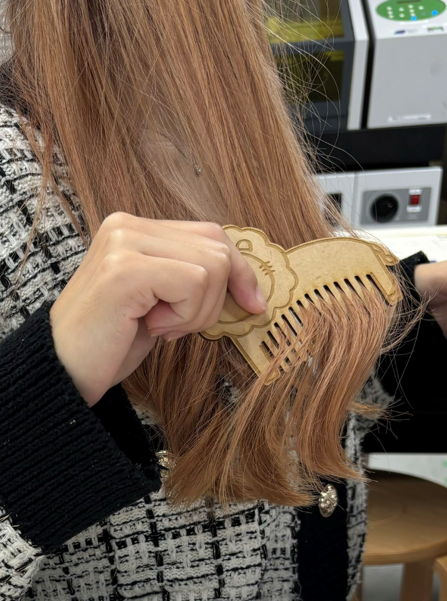
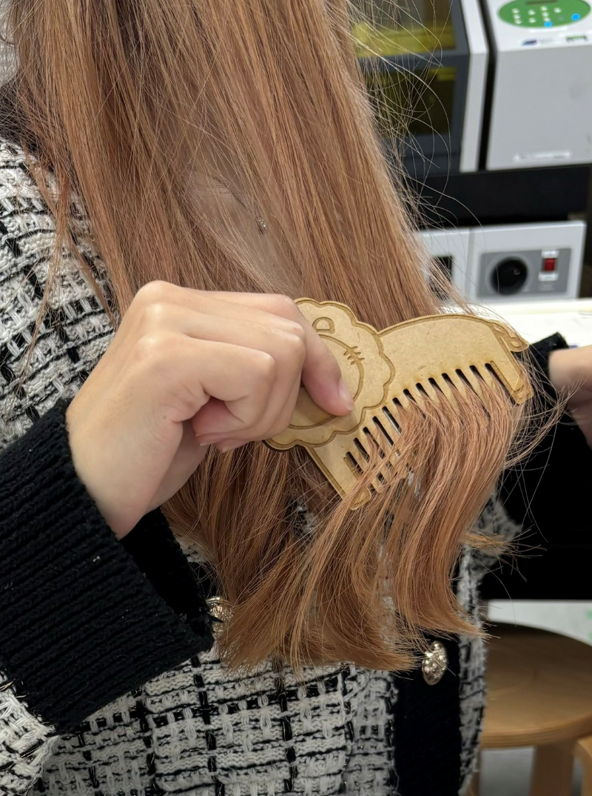
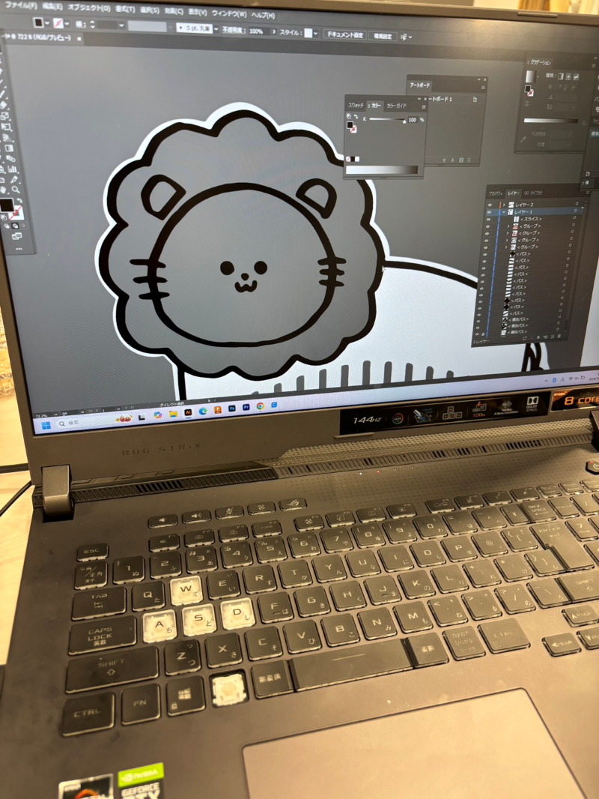
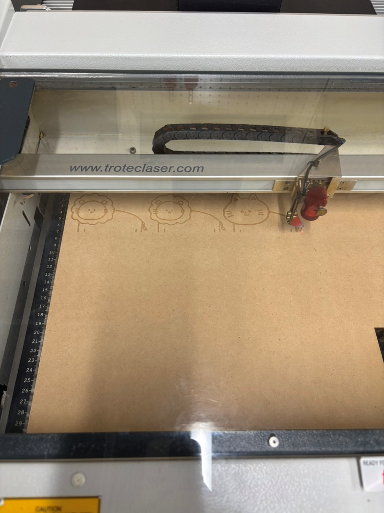
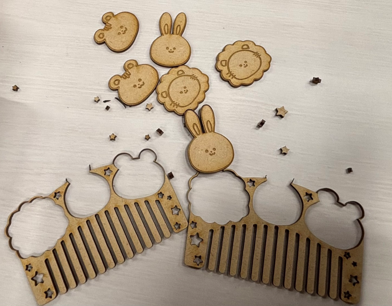
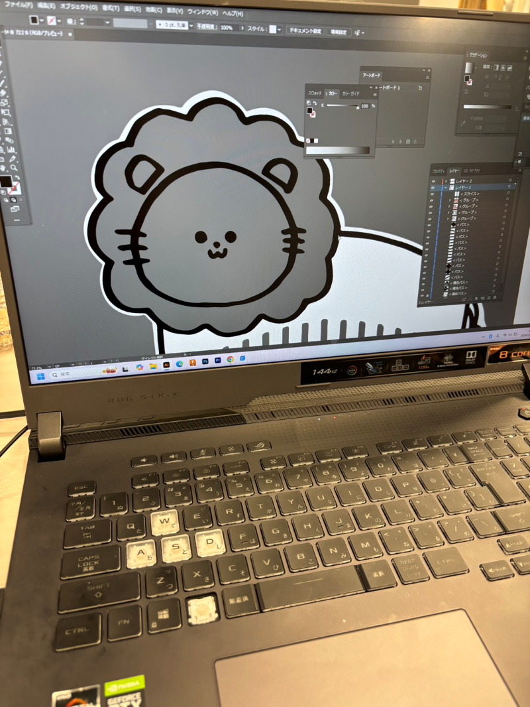
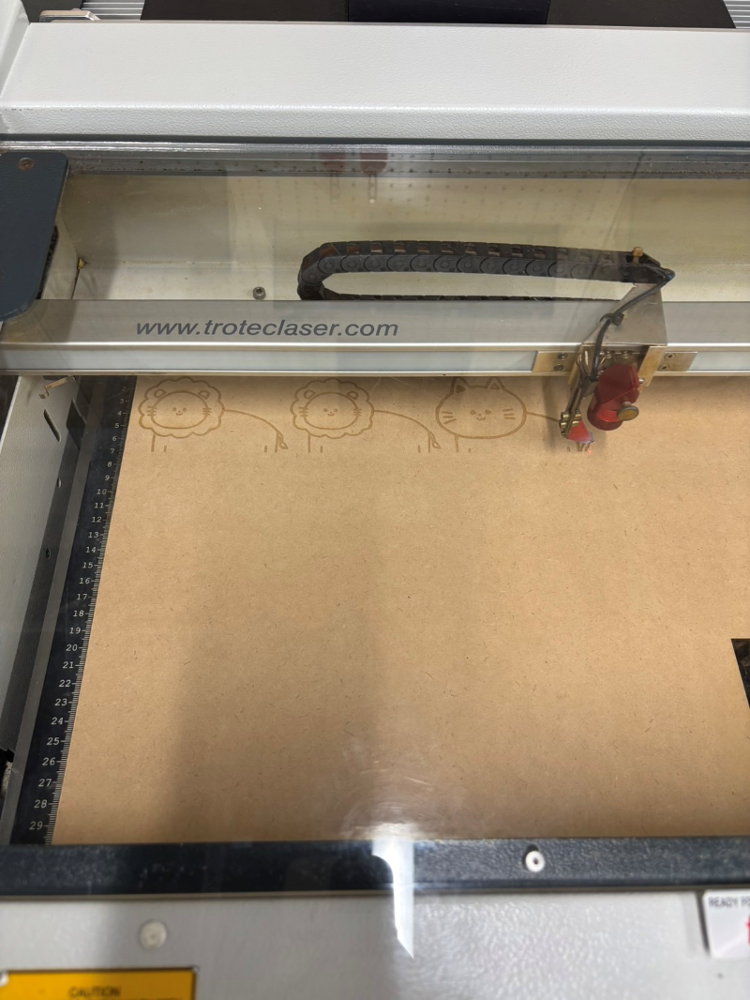
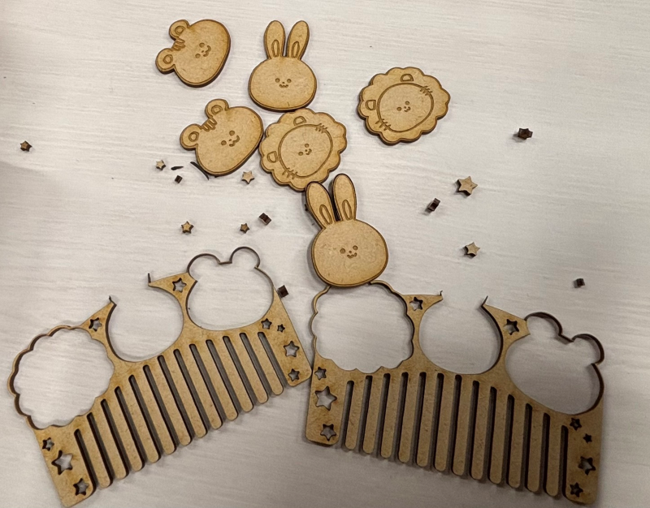

Animal Comb
完成品🌟↓
 

作品説明
動物の体をモチーフにした、くしをレーザーカッターで作った。
動物の体と動物の顔だけのデザインをつくり、その日の気分によって使い分けることができる。
朝から気分が上がるようにかわいいデザインにし、くしとしてだけでなくインテリアとしても使えるデザインにした。
なぜ作ろうと思ったのか
毎日必ず使う物を自分の好きなデザインで使うことができれば、朝から気分が上がると思ったため作った。
誰かとお揃いにしたり、使う用と飾る用などいくつかあればコレクションのようになり、くしだけでなく新たなの意味も持つ、くしを作ることができるt考えた。
作成過程の様子↓
 
スケッチで書いたものをイラストレーターで読み込み、切り取りと彫る線を編集して制作する。

↑↑切り取り線と彫る線の設定がうまくできておらず、動物の顔の部分が切り取られてしまった。 参考にしたサイトはこちら！
イラストレーターの使い方！
イラストレーターの使い方のマニュアル
イラストレーターの使い方 基本から応用まで
 
スケッチで書いたものをイラストレーターで読み込み、切り取りと彫る線を編集して制作する。

↑↑切り取り線と彫る線の設定がうまくできておらず、動物の顔の部分が切り取られてしまった。 参考にしたサイトはこちら！
イラストレーターの使い方！
イラストレーターの使い方のマニュアル
イラストレーターの使い方 基本から応用まで